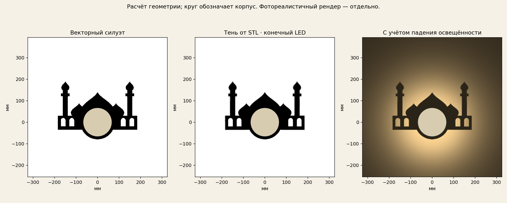

← Все вставки с трубой · Этот рисунок для модели без трубы →
Новая бюджетная модель без трубы →
Мечеть с двумя минаретами · с трубой
Вставка для PMMA-трубы Ø120 × 2 мм · 49.1 г PETG без учёта поддержек. Опорное кольцо; установка до склейки. С байонетом версии без трубы несовместима.
Генератор своих рисунков (предыдущая конструкция)
Мышь — вращение, колесо — масштаб. Прозрачная внешняя гильза — покупная PMMA-труба. Освещение этого сборочного просмотра условное; расчётная тень показана в соседней вкладке.
Тяните мышью или пальцем — вращение камеры. Колесо или два пальца — масштаб. Стена и собранная лампа остаются неподвижны относительно источника. Тень — численный расчёт через STL и PMMA; материалы корпуса и экспозиция условные.
5,06 млн лучей · источник 1 × 1 мм · преломление и потери Френеля. Вторичные отражения и рассеяние не рассчитаны. Точность зависит от положения и размера реального LED. Инструкция и ограничения

Финальная карта сравнения ещё не добавлена.
Результат сравнивается с согласованным рисунком. Область оценки, источник света и ограничения расчёта указаны справа; значения загружаются из файла результатов.